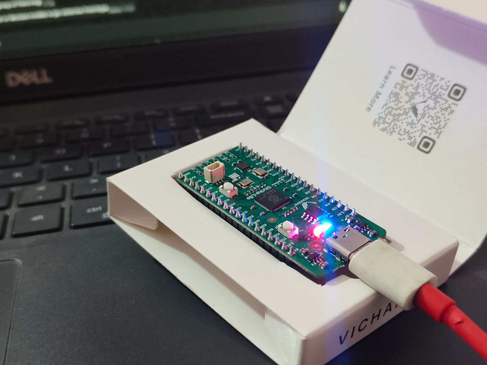
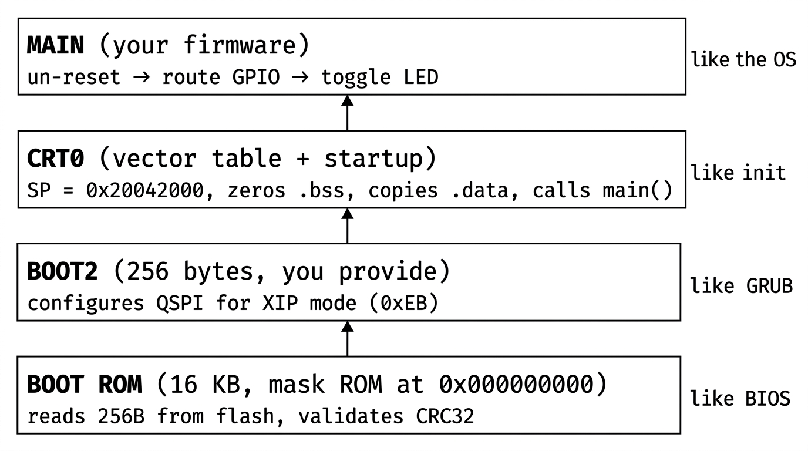
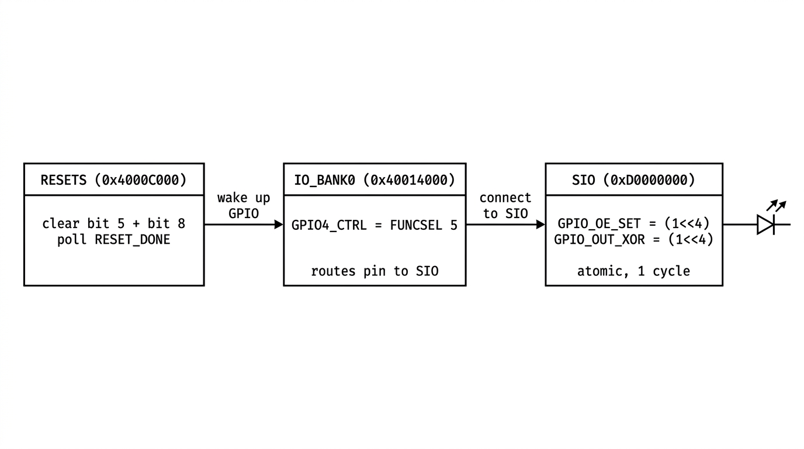
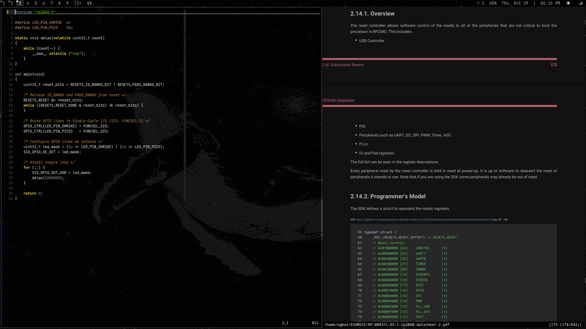
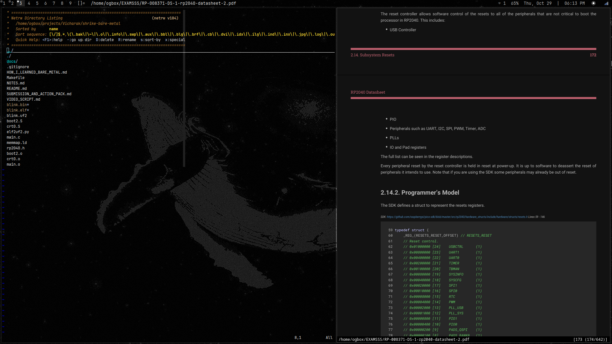

the board running bare-metal blink firmware — red LED is power, blue is ours on GPIO 4
most of the hardware projects i have worked on so far have been on frameworks. with ESP-IDF you get
app_main(), a CMakeLists build system, FreeRTOS running underneath, and functions like
gpio_set_level() that handle everything. you write application code. the SDK handles the
boot process, memory layout, linker scripts, and peripheral initialization.
when you strip all of that away and try to write firmware from nothing — just the cross-compiler and the
datasheet — the floor drops out. there is no gpio_init(). there is no startup code. there
is no linker script. there is no bootloader. you provide all of it yourself, or the chip sits there and
does nothing.
i wanted to see what that looks like on the RP2040.
the Vicharak Shrike Lite has two chips on it. the main one is the RP2040 — dual-core ARM Cortex-M0+ with 264 KB of SRAM. the second is a Renesas ForgeFPGA (SLG47910, 1120 LUTs). there are three LEDs — red for the 3.3V power rail, one blue driven by the RP2040 on GPIO 4, and one blue driven by the FPGA.
the important thing about the RP2040 is that it has no internal flash. your code lives on an external Winbond W25Q16JV — a 2 MB QSPI NOR flash chip soldered next to the RP2040. the CPU cannot execute from it directly at power-on because the flash speaks a protocol (SPI/QSPI) that needs to be configured first. this is the whole reason the boot process is as involved as it is.
also — the standard Raspberry Pi Pico has its user LED on GPIO 25. the Shrike Lite uses GPIO 4. if you follow Pico tutorials without checking the schematic, you toggle the wrong pin and nothing visibly happens.
there are three things inside the RP2040 that matter at boot: the CPU, the SRAM, and the Boot ROM. the flash is external. the CPU needs to get from "power just came on" to "executing your code from flash" — and that happens in stages.

the four-stage boot chain — each layer hands off to the next
boot rom — like the BIOS. 16 KB of mask ROM burned into the silicon at
0x00000000. you cannot change it. when power comes on, the CPU starts here. the Boot ROM
checks if the BOOT button is held — if yes, it enters USB mass storage mode (BOOTSEL) and waits for you
to drag a .uf2 file onto it. if not, it reads the first 256 bytes from external flash
using basic 1-bit SPI, computes a CRC32 over bytes 0–251, and checks it against bytes 252–255. if the
checksum passes, it runs those 256 bytes.
the CRC uses a non-reversed polynomial (0x04C11DB7, MSB-first). Python's standard
binascii.crc32() uses reflected (LSB-first) CRC. if you use the wrong one, the Boot ROM
silently rejects it and loops back into BOOTSEL. no error message. nothing.
boot2 — like GRUB. the 256 bytes the Boot ROM loaded. their job is to reconfigure the
flash interface from slow 1-bit SPI to Quad-SPI continuous read mode (command 0xEB). this
lets the CPU fetch instructions directly from flash as though it were regular linear memory — called XIP
(eXecute In Place). after configuring the flash, boot2 returns to the Boot ROM via
pop {r1, pc}.
i tried writing boot2 by hand from the datasheet. it didn't work. the board would flash and immediately
fall back into BOOTSEL. the problem was that i hadn't configured the Quad Enable (QE) bit on the flash
chip's status register, hadn't primed the XIP cache, and wasn't following the return convention
correctly. i ended up using the official Raspberry Pi boot2_w25q080 golden binary — 256
bytes with CRC 0x7a4eb274.
crt0 — like init. once boot2 returns, the Boot ROM reads the vector table from
0x10000100. word 0 is the initial stack pointer (0x20042000, top of SRAM).
word 1 is the reset handler address. the reset handler zeros .bss (uninitialized globals
must start at zero), copies .data from flash to RAM (initialized globals need to be in RAM
so you can modify them), and calls main().
main — like the OS. your actual firmware.
the RP2040 boots with almost every peripheral held in reset to save power. to toggle a single GPIO pin, you talk to three hardware blocks by writing to specific memory addresses.

the signal path from CPU to LED — three register writes
1. wake up the gpio subsystem. the RESETS controller at 0x4000C000 holds
peripherals in reset. clear bit 5 (IO_BANK0) and bit 8 (PADS_BANK0) to
release the GPIO hardware. then poll RESETS_RESET_DONE at 0x4000C008 until
both bits read 1 — the hardware is acknowledging that it is awake.
uint32_t reset_bits = RESETS_IO_BANK0_BIT | RESETS_PADS_BANK0_BIT;
RESETS_RESET &= ~reset_bits;
while ((RESETS_RESET_DONE & reset_bits) != reset_bits) {
}2. route the pin. every physical pin on the RP2040 is multiplexed — it can be SPI, UART,
I2C, PWM, or SIO (Single-cycle I/O). the default after reset is NULL (pin goes nowhere). writing
FUNCSEL = 5 into GPIO_CTRL(4) at IO_BANK0 connects GPIO 4 to the SIO block,
which is the block that gives you direct CPU control over pin state.
GPIO_CTRL(LED_PIN_SHRIKE) = FUNCSEL_SIO;3. toggle. the SIO block at 0xD0000000 has atomic SET, CLR, and XOR
registers. on most microcontrollers, toggling a pin means read the port register, flip the bit, write it
back — three operations that can be interrupted. the RP2040's XOR register does it in one CPU cycle.
writing (1 << 4) to SIO_GPIO_OUT_XOR inverts GPIO 4 atomically.
SIO_GPIO_OE_SET = led_mask;
for (;;) {
SIO_GPIO_OUT_XOR = led_mask;
delay(1000000);
}that is the entire program. un-reset, route, toggle.

writing the firmware with the datasheet open
the firmware — boot2, vector table, startup assembly, and main — compiles to 604 bytes total. the UF2
output is 1,536 bytes (three 512-byte UF2 blocks). flashing it means holding the BOOT button, plugging
in USB-C, and running cp blink.uf2 /run/media/$USER/RPI-RP2/.
$ make
text data bss dec hex filename
604 0 0 604 25c blink.elf
UF2: blink.bin -> blink.uf2 (604 bytes, 3 blocks)the project is seven source files. no build system beyond a Makefile. no dependencies beyond
arm-none-eabi-gcc and Python 3.

the project files in vim
wrong crc32 polynomial. the Boot ROM uses a non-reversed CRC32 polynomial
(0x04C11DB7, MSB-first). Python's binascii.crc32() uses the reflected variant
(LSB-first). if you compute the checksum with the standard function, the Boot ROM silently rejects boot2
and loops back into BOOTSEL. no error, no feedback. i had to write a custom CRC function that matches
the Boot ROM's convention.
wrong led pin. i spent time toggling GPIO 25 (the standard Pico LED pin) and seeing nothing happen. the Shrike Lite routes its onboard user LED to GPIO 4. the fix was reading the board schematic instead of assuming Pico compatibility. the firmware now toggles both pins.
assembler offset limit. ARMv6-M Thumb encoding only supports 5-bit word-aligned
immediate offsets in str instructions — max 124 bytes. the SSI controller's
SPI_CTRLR0 register is at offset 0xF4 from the base. the assembler rejected
it. the fix was loading the full address into a register instead of using a base+offset store.
boot2 handshake. i tried writing boot2 from scratch using the datasheet. the board kept
falling back into BOOTSEL. i hadn't configured the Quad Enable bit on the flash chip's status register,
hadn't primed the XIP cache, and wasn't following the Boot ROM's return convention
(pop {r1, pc}). i ended up using the official Raspberry Pi golden boot2 binary — 256
bytes, CRC 0x7a4eb274.